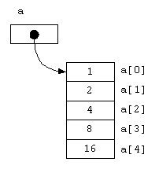
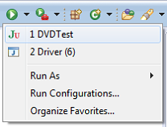

Assignments
Assignment1
1: IntelliJ and Basic I/O
Lectures
Introduction
OO Recap
Assignment Spec
Labs
Lab Introduction
Lab-01a
Lab-01b
2: Primitive Arrays
Lectures
Array Recap
ShopV2.0
Formative Assignment
Labs
Lab Introduction
Lab-02a
Lab-02b
3: ArrayLists
Lectures
Intro to ArrayList
More on ArrayList
Labs
Lab-03
4: Menu Driven Apps and Persistence
Lectures
Menu Driven Systems
CRUD Process
Labs
Debugging
Lab-04a
Lab-04b
5: Persistence (XML & Exceptions)
Lectures
Introduction to XML
XML and Java
Exception Handling
Miscellaneous Concepts
Labs
Lab-05
6: Collections (Map and Set)
Lectures
Tech Support System V1
Tech Support System V2
Tech Support System V3
Labs
Lab-06
7: Inheritance and Polymorphism
Lectures
Inheritance
Exploring Polymorphism
Labs
Lab-07
8: Abstraction
Lectures
Abstraction
Labs
Lab-08
9: Interfaces
Lectures
Deadly Diamond of Death
Introduction to Interfaces
More on Interfaces
Labs
Lab-09
10: TDD and JUnit
Lectures
Test Driven Development (TDD)
JUnit and DVD.java
JUnit Terminology
Planning Testing
Completing DVD app testing
Labs
Lab-10
Supplementary Materials
Lectures
Packages, Utilities and Parsing
Labs
ShopV6.0
Programming Fundamentals 2
All labs's in Module
Assignment1
Lab-01a
Lab-01b
Lab-02a

Lab-02b
Lab-03
Lab-04a
Lab-04b
Lab-05
Lab-06
Lab-07
Lab-08
Lab-09
Lab-10

ShopV6.0